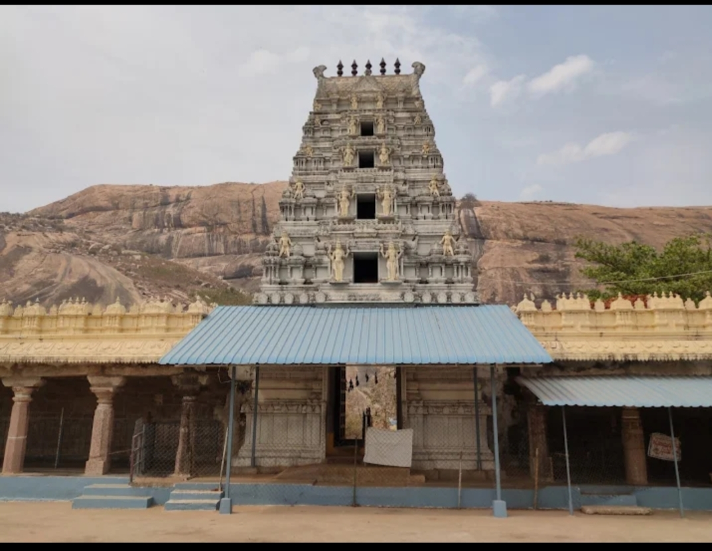

Vizianagaram Fort
Historic royal fort and major landmark of the city.

Ramnarayanam Temple
Beautiful temple known for its spiritual atmosphere.

Ramatheertham
Famous pilgrimage site with scenic hill views.

Tatipudi Reservoir
Peaceful reservoir surrounded by natural beauty.

Clock Tower
Historic clock tower located in the heart of Vizianagaram town.

Bobbili Fort
Historic fort known for bravery and battles.

Thotapalli Barrage
Important irrigation project and scenic location.